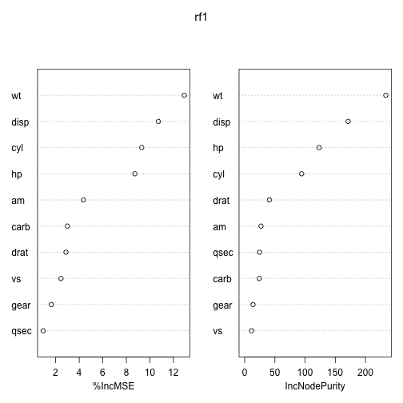

Abhijit Dasgupta
ARAASTAT
Generalized linear models are extensions of linear models, that are based on the exponential family of distributions. They are characterized by three components:
This framework includes several classical models:
We want to model a structure \[ y = \beta_0 + \beta_1 x_1 + \beta_2 x_2 + \beta_3 x_3 + \varepsilon \] from data, estimate the coefficients \(\beta\), obtain their standard errors, and perform statistical inference (hypothesis testing, confidence intervals)
> data(mtcars)
> model1 <- lm(mpg ~ disp + hp + drat + wt + as.factor(cyl) + as.factor(gear),
+ data = mtcars)
Call:
lm(formula = mpg ~ disp + hp + drat + wt + as.factor(cyl) + as.factor(gear),
data = mtcars)
Coefficients:
(Intercept) disp hp drat
34.5882 0.0082 -0.0349 -0.0177
wt as.factor(cyl)6 as.factor(cyl)8 as.factor(gear)4
-3.2786 -3.1038 -2.2208 1.7460
as.factor(gear)5
2.1689
Arguments:
> args(lm)
function (formula, data, subset, weights, na.action, method = "qr",
model = TRUE, x = FALSE, y = FALSE, qr = TRUE, singular.ok = TRUE,
contrasts = NULL, offset, ...)
NULL
Results
> names(model1)
[1] "coefficients" "residuals" "effects" "rank"
[5] "fitted.values" "assign" "qr" "df.residual"
[9] "contrasts" "xlevels" "call" "terms"
[13] "model"
> summ1 <- summary(model1)
Call:
lm(formula = mpg ~ disp + hp + drat + wt + as.factor(cyl) + as.factor(gear),
data = mtcars)
Residuals:
Min 1Q Median 3Q Max
-3.499 -1.226 -0.423 1.292 5.343
Coefficients:
Estimate Std. Error t value Pr(>|t|)
(Intercept) 34.5882 7.3448 4.71 9.6e-05 ***
disp 0.0082 0.0145 0.57 0.576
hp -0.0349 0.0187 -1.87 0.074 .
drat -0.0177 1.8457 -0.01 0.992
wt -3.2786 1.3090 -2.50 0.020 *
as.factor(cyl)6 -3.1038 1.6530 -1.88 0.073 .
as.factor(cyl)8 -2.2208 3.3402 -0.66 0.513
as.factor(gear)4 1.7460 2.1701 0.80 0.429
as.factor(gear)5 2.1689 2.3779 0.91 0.371
---
Signif. codes: 0 '***' 0.001 '**' 0.01 '*' 0.05 '.' 0.1 ' ' 1
Residual standard error: 2.56 on 23 degrees of freedom
Multiple R-squared: 0.866, Adjusted R-squared: 0.819
F-statistic: 18.5 on 8 and 23 DF, p-value: 2.58e-08
> summ1$coef
Estimate Std. Error t value Pr(>|t|)
(Intercept) 34.588188 7.34481 4.709199 9.609e-05
disp 0.008195 0.01446 0.566602 5.765e-01
hp -0.034901 0.01866 -1.870421 7.421e-02
drat -0.017740 1.84570 -0.009611 9.924e-01
wt -3.278616 1.30900 -2.504663 1.979e-02
as.factor(cyl)6 -3.103760 1.65305 -1.877597 7.318e-02
as.factor(cyl)8 -2.220765 3.34017 -0.664866 5.127e-01
as.factor(gear)4 1.746017 2.17011 0.804576 4.293e-01
as.factor(gear)5 2.168943 2.37790 0.912124 3.712e-01
> class(summ1$coef)
[1] "matrix"
> par(mfrow = c(2, 2)) # Arrange in 2x2 grid
> plot(model1)
> require(xtable)
> print(xtable(model1), type = "html")
| Estimate | Std. Error | t value | Pr(> |t|) | |
|---|---|---|---|---|
| (Intercept) | 34.5882 | 7.3448 | 4.71 | 0.0001 |
| disp | 0.0082 | 0.0145 | 0.57 | 0.5765 |
| hp | -0.0349 | 0.0187 | -1.87 | 0.0742 |
| drat | -0.0177 | 1.8457 | -0.01 | 0.9924 |
| wt | -3.2786 | 1.3090 | -2.50 | 0.0198 |
| as.factor(cyl)6 | -3.1038 | 1.6530 | -1.88 | 0.0732 |
| as.factor(cyl)8 | -2.2208 | 3.3402 | -0.66 | 0.5127 |
| as.factor(gear)4 | 1.7460 | 2.1701 | 0.80 | 0.4293 |
| as.factor(gear)5 | 2.1689 | 2.3779 | 0.91 | 0.3712 |
The way you do GLM's in R is basically the same as doing linear regression.
You just have to specify a distribution and link.
What you specify is a family, i.e., a family of distributions, with a link specification.
Logistic regression can be run if the outcome Y is either a binary or a binomial variable.
> data(infert)
> model2 <- glm(case ~ spontaneous + induced, data = infert, family = binomial())
> model2
Call: glm(formula = case ~ spontaneous + induced, family = binomial(),
data = infert)
Coefficients:
(Intercept) spontaneous induced
-1.708 1.197 0.418
Degrees of Freedom: 247 Total (i.e. Null); 245 Residual
Null Deviance: 316
Residual Deviance: 280 AIC: 286
> summary(model2)$coef
Estimate Std. Error z value Pr(>|z|)
(Intercept) -1.7079 0.2677 -6.380 1.776e-10
spontaneous 1.1972 0.2116 5.657 1.543e-08
induced 0.4181 0.2056 2.033 4.201e-02
Coefficients are interpreted as log-odds ratios.
If you data is binomial rather than binary, specify number of successes and failures as the outcome
> for (i in 1:3) esoph[, i] <- as.factor(as.character(esoph[, i]))
> model3 <- glm(cbind(ncases, ncontrols) ~ agegp + tobgp * alcgp, data = esoph,
+ family = binomial())
> model3
Call: glm(formula = cbind(ncases, ncontrols) ~ agegp + tobgp * alcgp,
family = binomial(), data = esoph)
Coefficients:
(Intercept) agegp35-44 agegp45-54
-6.391 1.586 2.983
agegp55-64 agegp65-74 agegp75+
3.350 3.729 3.655
tobgp10-19 tobgp20-29 tobgp30+
1.147 1.210 1.785
alcgp120+ alcgp40-79 alcgp80-119
2.818 1.678 2.033
tobgp10-19:alcgp120+ tobgp20-29:alcgp120+ tobgp30+:alcgp120+
-1.046 -0.892 -1.567
tobgp10-19:alcgp40-79 tobgp20-29:alcgp40-79 tobgp30+:alcgp40-79
-0.988 -0.979 -0.880
tobgp10-19:alcgp80-119 tobgp20-29:alcgp80-119 tobgp30+:alcgp80-119
-0.972 -1.082 -0.988
Degrees of Freedom: 87 Total (i.e. Null); 67 Residual
Null Deviance: 227
Residual Deviance: 47.5 AIC: 237
> counts <- c(18, 17, 15, 20, 10, 20, 25, 13, 12)
> outcome <- gl(3, 1, 9)
> treatment <- gl(3, 3)
> d.AD <- data.frame(treatment, outcome, counts)
> model4 <- glm(counts ~ outcome + treatment, family = poisson())
> model4
Call: glm(formula = counts ~ outcome + treatment, family = poisson())
Coefficients:
(Intercept) outcome2 outcome3 treatment2 treatment3
3.04e+00 -4.54e-01 -2.93e-01 1.34e-15 1.42e-15
Degrees of Freedom: 8 Total (i.e. Null); 4 Residual
Null Deviance: 10.6
Residual Deviance: 5.13 AIC: 56.8
> summary(model4)$coef
Estimate Std. Error z value Pr(>|z|)
(Intercept) 3.045e+00 0.1709 1.781e+01 5.427e-71
outcome2 -4.543e-01 0.2022 -2.247e+00 2.465e-02
outcome3 -2.930e-01 0.1927 -1.520e+00 1.285e-01
treatment2 1.338e-15 0.2000 6.690e-15 1.000e+00
treatment3 1.421e-15 0.2000 7.105e-15 1.000e+00
Coefficients are interpreted as log-ratios.
> print(xtable(model4), type = "html")
| Estimate | Std. Error | z value | Pr(> |z|) | |
|---|---|---|---|---|
| (Intercept) | 3.0445 | 0.1709 | 17.81 | 0.0000 |
| outcome2 | -0.4543 | 0.2022 | -2.25 | 0.0246 |
| outcome3 | -0.2930 | 0.1927 | -1.52 | 0.1285 |
| treatment2 | 0.0000 | 0.2000 | 0.00 | 1.0000 |
| treatment3 | 0.0000 | 0.2000 | 0.00 | 1.0000 |
The usual nomemclature defines two data sets
This typically involves splitting the data into
What you report is the prediction error or some surrogate
> set.seed(135793)
> library(caret)
> indx.train <- createDataPartition(y = 1:nrow(mtcars), p = 0.7, list = F)
> mtcars.train <- mtcars[indx.train, ]
> mtcars.test <- mtcars[-indx.train, ]
> require(randomForest)
> rf1 <- randomForest(mpg ~ ., data = mtcars.train, importance = T)
> varImpPlot(rf1)

> library(ggplot2)
> p1 <- predict(rf1, newdata = mtcars.test)
> qplot(mtcars.test$mpg, p1, xlab = "True", ylab = "predicted") + geom_abline(color = "red") +
+ geom_smooth()
> library(AppliedPredictiveModeling)
> data(twoClassData, package = "AppliedPredictiveModeling")
> twocl <- cbind(classes, predictors)
> indx.train <- createDataPartition(twocl$classes, p = 0.5, list = F)
> twocl.train <- twocl[indx.train, ]
> twocl.test <- twocl[-indx.train, ]
> str(twocl)
'data.frame': 208 obs. of 3 variables:
$ classes : Factor w/ 2 levels "Class1","Class2": 2 2 2 2 2 2 2 2 2 2 ...
$ PredictorA: num 0.158 0.655 0.706 0.199 0.395 ...
$ PredictorB: num 0.1609 0.4918 0.6333 0.0881 0.4152 ...
> library(gbm)
> twocl.train <- transform(twocl.train, classes1 = ifelse(classes == "Class2",
+ 1, 0))
> twocl.test <- transform(twocl.test, classes1 = ifelse(classes == "Class2", 1,
+ 0))
> model5 <- gbm(classes1 ~ ., data = twocl.train, n.trees = 1000, cv.folds = 5)
Distribution not specified, assuming bernoulli ...
> p5 <- predict(model5, newdata = twocl.test, n.trees = 500, type = "response")
> model6 <- randomForest(classes ~ ., data = twocl.train)
> p6 <- predict(model6, newdata = twocl.test, type = "prob")[, 2]
Misclassification
> misclas5 <- mean((twocl.test$classes == "Class2") != (p5 > 0.5))
> misclas6 <- mean(twocl.test$classes != predict(model6, newdata = twocl.test))
> data.frame(GBM = misclas5, RF = misclas6)
GBM RF
1 0 0
> library(ROCR)
> pred5 <- prediction(p5, twocl.test$classes)
> perf5 <- performance(pred5, "tpr", "fpr")
> plot(perf5)
> library(ROCR)
> pred6 <- prediction(p6, twocl.test$classes)
> perf6 <- performance(pred6, "tpr", "fpr")
> plot(perf6)
> extract.auc <- function(pred) {
+ require(ROCR)
+ perf <- performance(pred, "auc")
+ paste("AUC =", perf@y.values)
+ }
> data.frame(GBM = extract.auc(pred5), RF = extract.auc(pred6))
GBM RF
1 AUC = 1 AUC = 1
> library(caret)
> bmodel <- train(classes ~ ., data = twocl.train, method = "gbm", tuneLength = 10,
+ trControl = trainControl(method = "cv", number = 5))
> library(rpart)
> bmodel2 <- train(classes ~ ., data = twocl.train, method = "rpart", tuneLength = 10,
+ trControl = trainControl(method = "cv", number = 5))
The M/M/1 process has a single server who serves incoming clients.
> t.end <- 10^5 # duration of sim
> t.clock <- 0 # sim time
> Ta <- 1.3333 # interarrival period
> Ts <- 1 # service period
> t1 <- 0 # time for next arrival
> t2 <- t.end # time for next departure
> tn <- t.clock # tmp var for last event time
> tb <- 0 # tmp var for last busy-time start
> n <- 0 # number in system
> b <- 0 # total busy time
> c <- 0 # total completions
> qc <- 0 # plot instantaneous q size
> tc <- 0 # plot time delta
> plotSamples <- 100
> set.seed(1)
The code is here
> source("rundes.R")
> plot(tc, qc, type = "s", xlab = "Time", ylab = "Instantaneous queue length",
+ main = "M/M/1 simulation")
This option uses a Windows-only package called R2wd, which uses the DCOM service on Microsoft operating systems
This may be a security risk. Don't know
> library(R2wd)
> wdGet() # Opens new Word doc if not already open
> wdTable(format(head(mtcars)))
> wdPlot(rnorm(100), plotfun = plot, height = 10, width = 20, pointsize = 20)
>
See this page for a worked out example.
Using pandoc and pander to create Word documents
> library(pander)
> myReport <- pander::Pandoc$new("Abhijit", "demo")
> myReport$add(model1)
> myReport$add(model4)
> myReport$add.paragraph("Now here's a plot!!")
> myReport$add(plot(perf6))
> myReport$format <- "html"
> myReport$export(open = F)